🩸 血管：主要動脈
主要動脈(總覽)
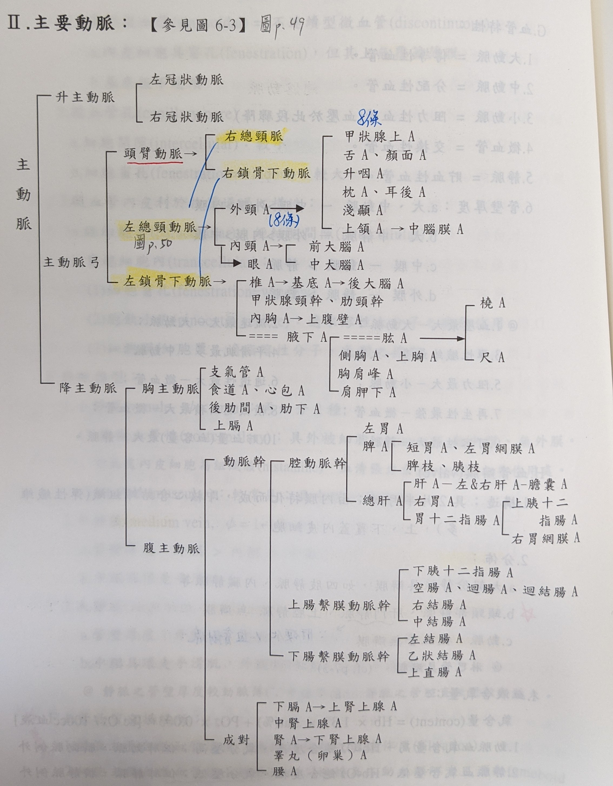
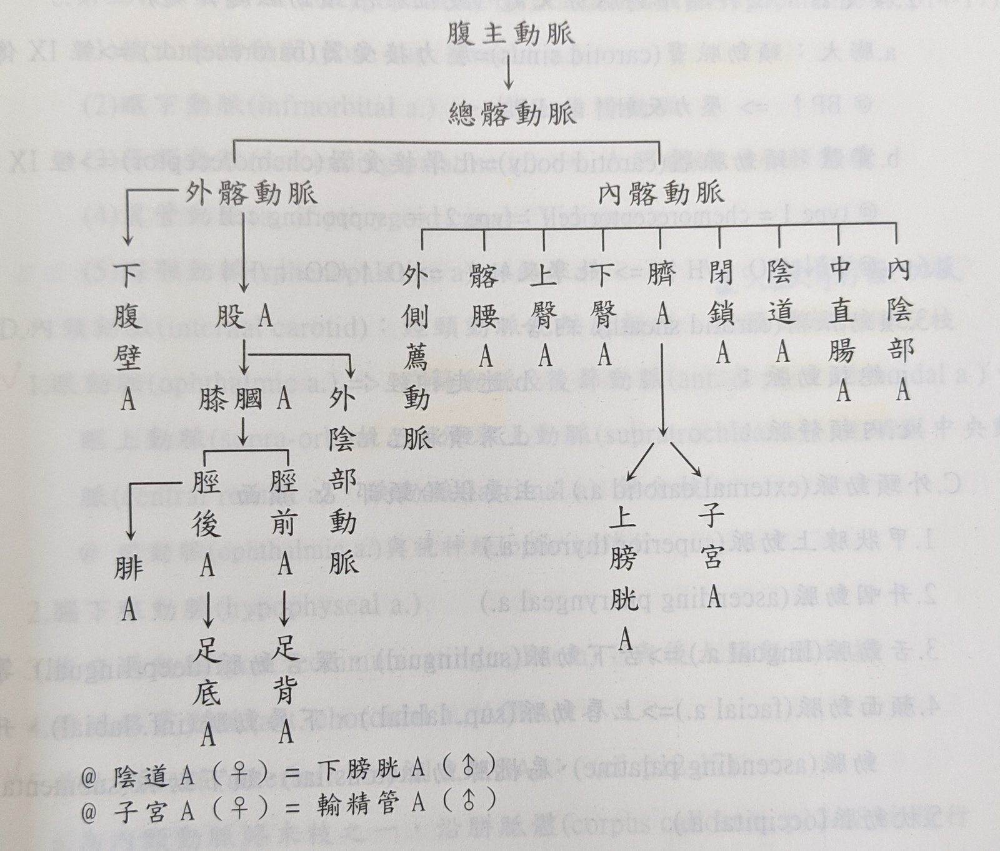
主動脈(arota)：連接左心室：分三段
- 主動脈(aorta)：連接左心室,分三段
- 升主動脈(ascending aorta)：位於肺動脈幹之右側，★具左、右冠狀動脈
- 主動脈弓(arch of aorta)：可能因★胸骨柄處的穿刺傷而受傷(與肺動脈幹相比，主動脈弓更靠近體表)
- 位於上縱膈腔，前自胸骨角(胸骨柄與胸骨體交界)，後至T4下緣
- 位於肺動脈幹之上(方向：右前往左後)，具3分枝(按順序)：
- 頭臂動脈(brachiocephalic a.)：僅1條，於右胸鎖關節後方，分出右總頸A. 及右鎖骨下A. (左側的這兩條直接由主動脈弓分出)
- 左總頸動脈
- 左鎖骨下動脈
- 降主動脈(descending aorta)：
- 以橫膈膜為界：分為胸主動脈(thoracic aorta)、腹主動脈(abdominal aorta)
- ★★末端在L4(=supracristal plane(髂嵴連線)：再分出左、右總髂A(common iliac a.)
- 註：趙神上課是說橫臍面(L3/L4)可以做為定位，但Moore有寫肚臍無法作為準確定位標準(EX：肥胖的人)
- [98-2]那題intercristal plane(髂骨最上緣連線，L4) 跟supracristal plane(L4)好像是同個意思，但網路上好像沒看到固定說法QQ
- ★主動脈狹窄(coarctation of aorta)：
- 常發生於主動脈弓(左鎖骨下A分出處之遠端；胸主A起始處前)
- 代償：主動脈弓→鎖骨下A→内胸A→前肋間A→後肋間A(胸主A的直接分支)→胸主動脈 (繞過狹窄處)
- 診斷：
- ★肋間A變大，甚至可摸到脈搏
- X光片：★肋骨下緣有動脈增大之切跡
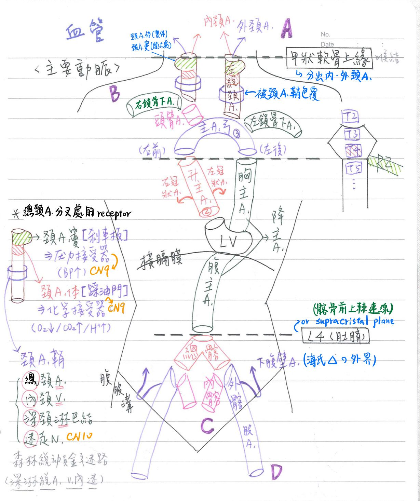
總頸A(common carotid a.)
- 末端於甲狀軟骨上緣分成：內頸A及外頸A，此外別無分枝
- 位於總頸A分叉處(內頸A起始處)的接收器：
- 頸動脈竇(carotid sinus)：壓力接受器(baroreceptor)，由★CN9傳遞
- BP↑→baroreflex ↑→HR↓→BP↓
- 頸動脈體(carotid body)：化學接受器(chemoreceptor)，由★CN9傳遞
- type I = chemoreceptor cell；type 2 = supporting cell
- O2 ↓/CO2 ↑/ H+ ↑ →化學反射↑→呼吸速率↑
- 頸動脈竇(carotid sinus)：壓力接受器(baroreceptor)，由★CN9傳遞
- ★★頸動脈鞘(carotid sheath)內含：[hint：森林總動員，走在森林內迷路]
- 深頸淋巴結
- 總頸A
- 內頸V
- 迷走N
外頸A(external carotid a.)
- 主要供給：★頸部&顏面
- 重要分支：8條
- 上甲狀腺動脈(superior thyroid a.)→上喉A(和★內喉N伴行穿過甲狀舌骨膜)
- 升咽動脈(ascending pharyngeal a.)
- 舌動脈(lingual a.)→舌下動脈(sublingual)、深舌動脈(deep ligual)
- 顏面動脈(faciala)：行於下頷角下緣
- 上唇A(superior labial)、下唇A(inf. labial)
- 升腭A(ascending palatine)
- 扁桃體A(tonsilar)：★[109-2]供應顎扁桃體(major)
- 頦下A(submental)
- →角A(angular)→★[110-1]外側鼻A、內側鼻A
- 枕動脈(occipital a.)
- 耳後動脈(posterior ricular a.)
- 淺顳動脈(supeficial temporal a.)：於下頷骨頸之後方分出
- ★[109-2]橫面A (transverse facial)
- 中顳A(middle temporal)
- ★眼眶A(zygomatico-orbital)
- ★上頷動脈(maxillary a.)：最大的分枝，於下頷骨頸之後方分出，行於★下頷髁(mandibular condyle)內側
- 第一段：下頷段(mandibular portion)，位於顳下窩(infratemporal fossa)
- ★[109-2]下齒槽A(inferior alveolar)：於顳下窩分出
- ★中腦膜A(middle meningeal)：破裂→硬腦膜上腔出血(EDH)
- 深耳A(deep auricular)、前鼓室A(anterior tympanic)
- 第二段：翼段(pterygoid portion)，位於外翼肌(lateral pterygoid m.)中
- ★頰A(buccal)：供應頰肌
- 第三段：翼腭段(pterygopalatine portion)：位於翼腭窩(pterygopalatine fossa)
- 後上齒槽A(post.sup.alveolara.)
- ★眶下A(infraorbital a)→前上齒槽A
- 降腭A(descending palatine a.)→★[110-1]大腭A、小腭A
- 翼管A(a. of pterygoid canal / Vidian a.)
- ★[110-1]蝶顎A(sphenopalatine a.)：終末枝
- 第一段：下頷段(mandibular portion)，位於顳下窩(infratemporal fossa)
★[110-2考分支]內頸A(internal carotid a.)
- 經頸動脈孔，供應顱內。在★頸部無任何分枝(進顱骨前無分支)
- 供應鼻腔黏膜、硬腦膜、頭皮等之血液供應：內頸A & 外頸A
- ★[109-2]和外旋N共同穿越海綿竇(cavernous sinus)
- ★★[110-1][重點]眼動脈(ophthalmic a)
- ★與視N(optic n.)伴行；穿過視神經管(optic canal)
- 分支：
- ★[110-1]前篩A(供應★腦膜)& 後篩A(供應★鼻腔黏膜、硬腦膜)
- 眶上A(供應★頭皮、前額)、滑車上A(supratrochlear a)
- 視網膜中央A(central retinal a)、淚A(lacrimal a)
<cf>眶下A：from上頷A.
- 腦下腺動脈(hypophyseal a.)
- 後交通動脈(post. communicating a. ,Pcom)：與後大腦A相接
- ★★[110-2]前脈络叢動脈(ant. choroidal a. , AChA)：內頸A的直接分支
- [重點]前大腦動脈(anterior cerebral a. , ACA)
- 為內頸A終末枝之一，沿胼胝體(corpus callosum)向後行
- 供應：★★胼胝體、額葉內側(小腿運動)、頂葉內側(小腿感覺)、顳葉內側(嗅覺)
[hint：皆為內側]
- 具★[110-2]前交通枝：連接左、右前大腦A
- ★[110-2]中大腦動脈(middle cerebral a. ,MCA)
- 為內頸A終末枝之一，沿大腦側裂向後上行
- 供應：★額葉外側(其他運動)、頂葉外側(其他感覺)、顳葉外側(聽覺) [hint：皆為外側]
- (左側)中大腦A上分支梗塞：★Borca's aphasia(運動型失語症)→可以理解，無法表達
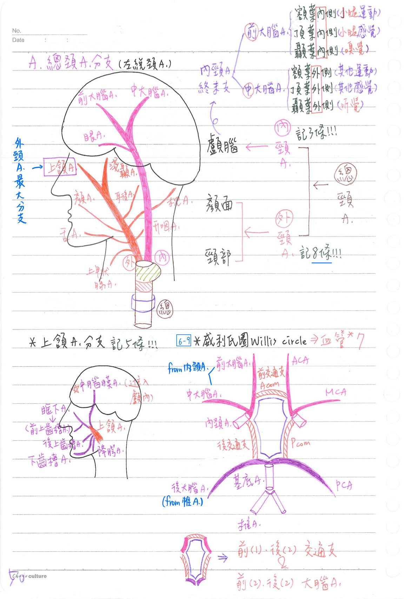
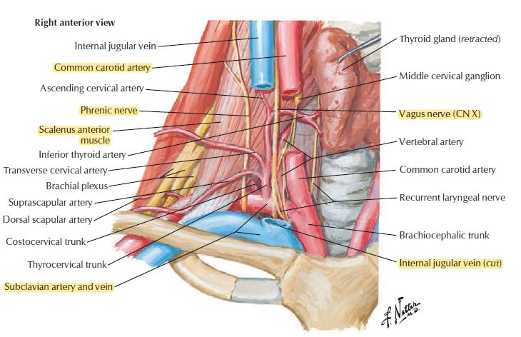
★[109-2]內頸A位於內頸V內側
好像有一次是考膈N&斜角肌相對位置
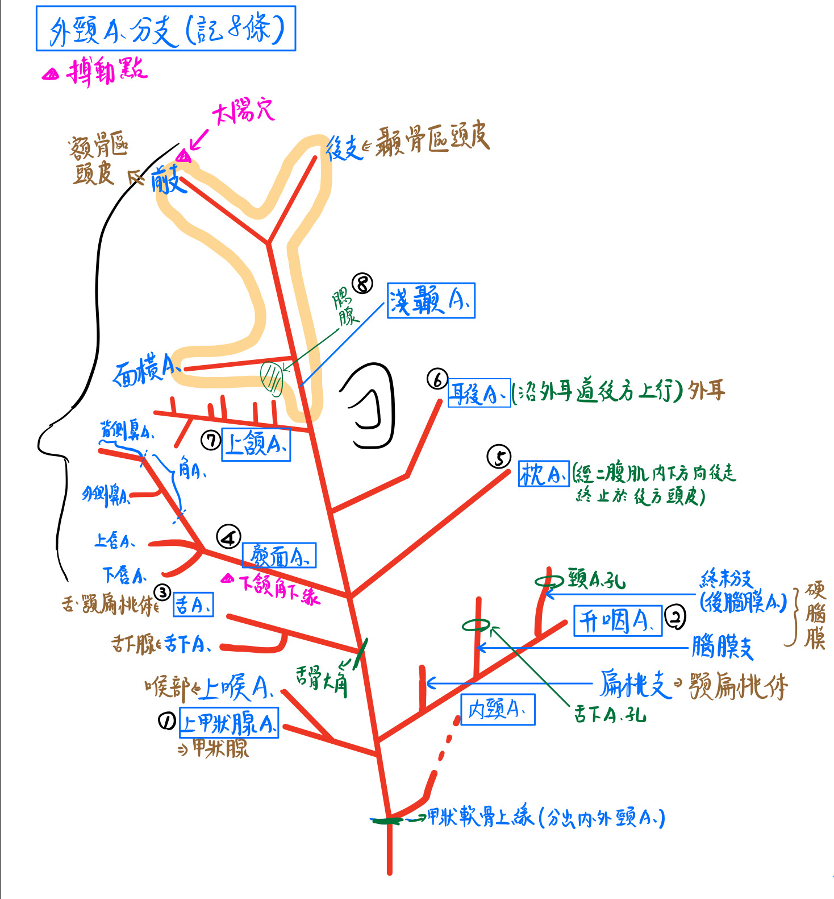
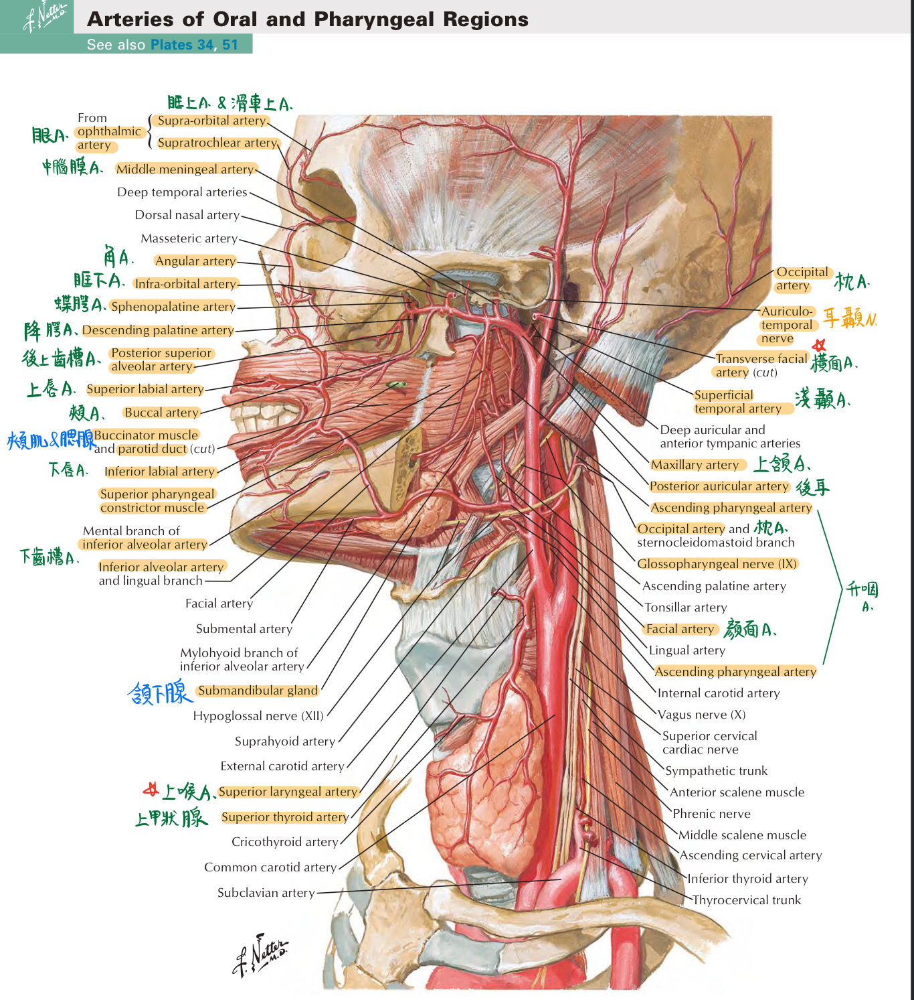
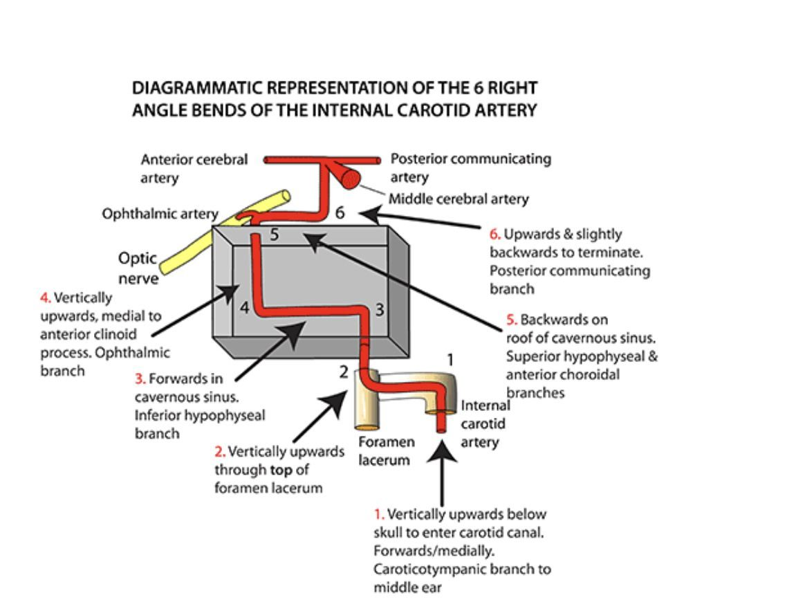
- ★[109-2；這他X超細..]內頸A向上經過頸動脈孔後→形成petrous part在骨頭內向前走
→在破裂孔處向上，進入海綿竇(cavernous sinus) ，形成cavernous part
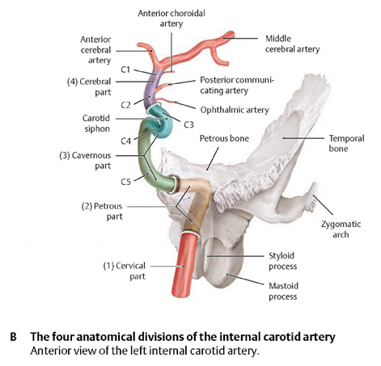
[重點]腦的血液供應
- 主要源自：內頸A(前、中大腦A) & 椎A(後大腦A)
- ★威利氏環(Willis circle)：內頸A & 椎A於顱底形成，共計七條血管
- 前大腦動脈(2條)：內頸A之分枝
- ★[108-1]前交通枝(1條)：連接左、右前大腦A (溝通左、右內頸A系統)
- 後交通枝(2條)：連接內頸A & 後大腦A (溝通內頸A、椎A系統)
- 後大腦動脈(2條)：椎A→基底A之分枝
- 特定區域之主要供應血管：
- 基底核(basal ganglion)：前大腦A(前方)、中大腦A(中央大部分)、前脈絡叢A(後方)
- 丘腦(thalamus)：★後大腦A、後交通A、基底A
- 中腦(midbrain)：後大腦A、基底A、上小腦A
- 橋腦(pons)：基底A(→橋腦A)、上小腦A、前下小腦A
- 延腦(medullaoblongata)：基底A、後下小腦A、椎A、前脊髓A、後脊髓A
- 小腦(cercbellum)：上小腦A、前下小腦A、後下小腦A
- 腦室之主要供應血管：
- 側腦室脈絡叢：前脈絡叢A(from 內頸A)、後脈絡叢A(from 後大腦A←椎A)
- 第三腦室脈絡叢：後大腦A
- 第四腦室脈络叢：後下小腦A
鎖骨下A(subclavian a.)
- 以前斜角肌分成三段：
- 第一段：位前斜角肌之內側
- ★[107-2]內胸/內乳動脈 (internal thoracic/mammary a.)：4分支，★★[109-2]行於胸橫肌&肋軟骨之間
- ★心包膜橫膈動脈(pericardiophrenic)：與膈N伴行
- 前肋間動脈(anterior intercostal)：1st〜6th &
12th備註
應該沒有12th~
- ★肌肉橫膈動脈/肌膈A.(musculophrenic)[終末枝之一]→7~11th 前肋間A
- 上腹壁A(superior epigastric)[終末枝之一]
- ★[108-2]甲狀腺頸動脈幹(thyrocervical trunk)
- ★★下甲狀腺動脈(inferior thyroid a.)：supply食道(頸段)
- ★橫頸動脈(transverse cervical a)→淺頸動脈(superficial cervical a.)
- 橫頸A深支：★沿肩胛骨內側緣下行(106這題超偏)
- 淺頸A可能直接源自甲狀腺頸動脈幹
[106-2]頸橫動脈-解剖圖
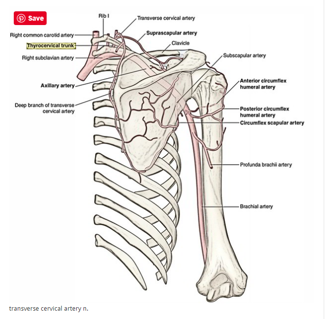
- ★肩胛上動脈(suprascapular a.)
- [重點]椎動脈(vertebral a.)：通過頸椎之橫突孔(C1~C6)、★後寰枕膜(黃韌帶的延伸)、枕骨大孔進入顱腔
- ★[108-1]前脊髓A (左、右匯集成一)&後脊髓A (成對)：供應脊髓
- 後下小腦動脈(post. inf. cerebellar a. ,PICA)：成對
- [重點]基底動脈(basilar a.)：左、右椎A匯集而成(一條)
- 前下小腦動脈(ant. inf. cerebellar a.)：成對
- 橋腦動脈(pontine a.)：成對
- 上小腦動脈(sup. cerebellar a.)：成對
- 後大腦動脈(post. cerebral a)：成對，供给枕葉(視覺)、丘腦、中腦、側腦室等
- ★[107-2]內胸/內乳動脈 (internal thoracic/mammary a.)：4分支，★★[109-2]行於胸橫肌&肋軟骨之間
- 第二段：位於前斜角肌之後方
- 肋頸動脈幹(costocervical trunk)：於R1頸部分出
- ★★[108-2]深頸A(deep cervical)
- ★最高肋間A/(最)上肋間A(highest/supreme/superior intercostal a.)→1st & 2nd 後肋間A
<cf>3rd~11th後肋間動脈：from胸主動脈
- 肋頸動脈幹(costocervical trunk)：於R1頸部分出
- 第三段：位於前斜角肌之外側
- 背肩胛動脈(dorsal scapula a.)
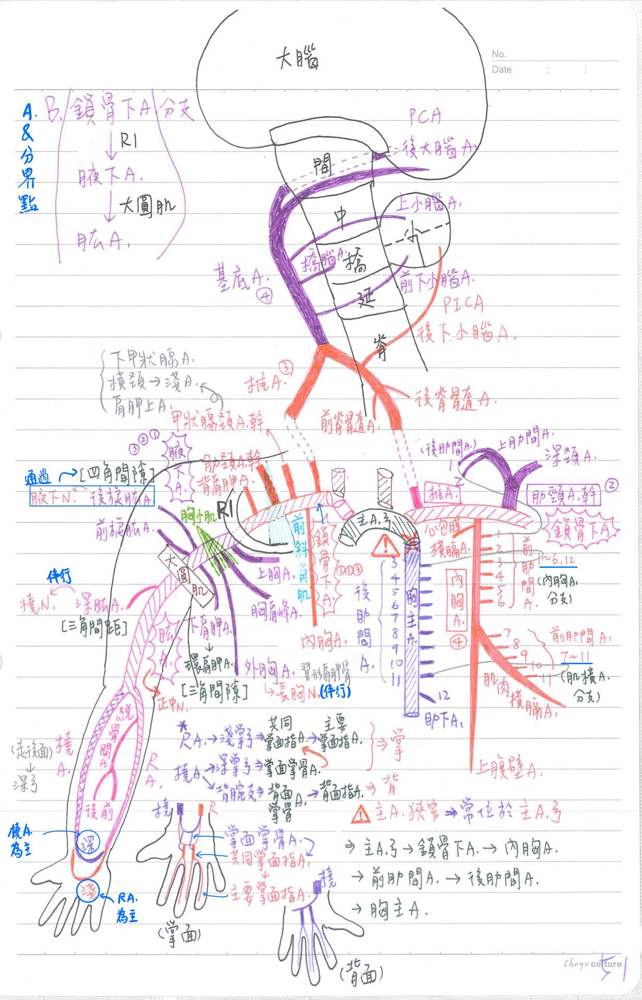
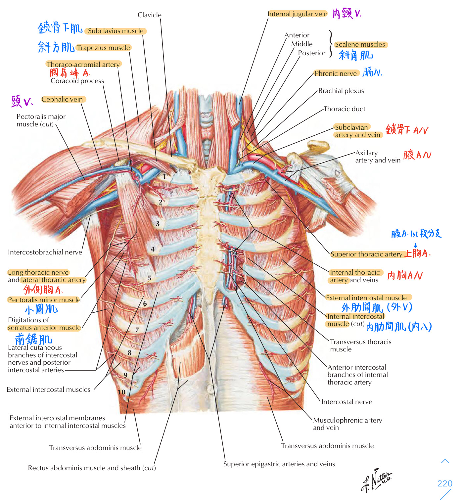
腋下A(axillary a.)
- 以胸小肌分成三段
- 第一段：位於胸小肌之內側
- 上胸動脈(superior thoracic a.)
- 第二段：位於胸小肌之後方
- 外胸動脈(lateral thoracic)：與長胸N(long thoracic n.)伴行
- 胸肩峰動脈(thoracoacromial)
- 第三段：位胸小肌之外側
- ★肩胛下動脈(subscapular)→環肩胛動脈：通過三角間隙(triangular space)
- 前旋肱動脈
- [重點]後旋肱動脈
- 前、後旋肱動脈：環繞肱骨外科頸
- ★後旋肱A & 腋下N：通過四角間隙(quadrangular space)
- 肩關節(肱盂關節)主要供應血管：肩胛上A、前 & 後旋肱A
肱A(humeral a.)：與正中N伴行
- 肱A：位於★手臂內側，肱三頭肌&肱肌前面
- ★深肱動脈(profunda brachial a.)：★★★★與橈N伴行
- 深肱A & 橈N：通過三角間距(triangular interval)、橈神經溝(★★肱三頭肌之內、外頭之間)
- 終末分枝:：
- 橈動脈(前臂外側)→深掌弓(deep plmar arch)
- 橈A經手腕外背側之解剖鼻煙盒後，穿越★第1背側骨間肌進入手掌腹面，再穿過★内收拇指肌，注入深掌動脈弓
- 尺動脈(★前臂內側)→
- 淺掌弓(superficial palmar arch)
- 總骨間A(common interosseous)→前骨間A、後骨間A。
- 橈動脈(前臂外側)→深掌弓(deep plmar arch)
手部動脈[98年後沒考過]
- 由橈A、尺A吻合形成
- 浅掌弓(superficial palmar arch)：主要源自尺A，位於掌面
- ★共同掌面指動脈(common palmar digital)→主要掌面指動脈(proper palmar digital)
- 深掌弓(deep palmar arch)：主要源自橈A，位於掌面
- ★掌面掌骨動脈(palmar metacarpal)→匯入淺掌弓之共同掌面指動脈(common palmar digital)
- 背腕枝(dorsal carpal branch)：主要源自橈A，位於手背
- 背面掌骨動脈(dorsal metacarpal)→背面指A.(dorsal digital)
胸主動脈：6條分支，supply 3胸腔器官(心、肺、食道)
- ★[107-2]支氣管動脈(bronchial a.)：supply肺臓；★[108-2]咳血的血液來源
- ★[107-2]食道動脈(esophageal a)：supply食道中1/3
- 心包膜動脈(pericardial a)：supply心包膜
- 後肋間動脈(posterior intrcostal a.)：★[107-2]3rd~11th後肋間動脈
<cf>1~2nd後肋間動脈：最高肋間A/上肋間A←肋頸動脈幹←鎖骨下A
- 肋下動脈(subcostal a)：位於12th肋骨下方，約=12th後肋間動脈
- ★上膈動脈(superiorphrenic a)：supply橫膈上表面
腹主動脈：三大動脈幹+5對分支[每年考]
[重點]三大動脈幹(由上而下)
- SMA與IMA吻合處：
- arc of Riolan (= meandering a.)：直接連絡SMA & IMA之近端
- 邊緣動脈(marginal a.)：平行於結腸，由結腸各動脈吻合形成
- 腔動脈幹(celiac trunk)：位於橫膈膜主動脈裂孔之正下方，約L1高度
→供應：前腸(★大網膜 、胃、肝、膽、胰、脾、十二指腸近端)- 左胃動脈(Ieft gastric a.)—>食道枝(esophageal branch)
- 總肝動脈(common hepatic a.)：3分支
- 肝固有動脈(hepatic a. proper)→
- 左肝動脈
- [重點]右肝A→★膽囊A(cystic a.)
- ★★右胃動脈(right gastric a.)
- 胃十二指腸動脈(gastroduodenal a.)→
- ★[108-2]上胰十二指腸動脈(sup. pancreaticoduodenal)：胰頭、12指腸近端
- 右胃網膜動脈(right gastroepiploic a.)
- 肝固有動脈(hepatic a. proper)→
- ★脾動脈(splenic a.)：4分支
- ★短胃動脈(short gastic)
- ★左胃網膜動脈(I't gastroepiploic)
- 脾枝(splenic)
- 胰枝(pancreatic)/★背胰A.(dorsal pancreatic a.)：胰頸、胰體、胰尾
- 上腸繫膜動脈幹(superior mesenteric trunk, SMA)：
→供應：中腸(十二指腸遠端~橫結腸前 2/3)- SMA & 腹主動脈之夾角(take-off angle)：約37度(30~42度)
→若夾角太小，則壓迫十二指腸第3部份造成腸阻塞
- 下胰十二指腸動脈(inf. pancreaticoduodenal)：胰頭、12 指腸遠端(5分支)
- 空腸枝(jejunal br.)
- 迴腸枝(ileal br.)
- ★迴結腸動脈(ileocolic a.)：闌尾
- 右結腸動脈(r't colic a.)
- 中結腸動脈(middle colic a.)
- SMA & 腹主動脈之夾角(take-off angle)：約37度(30~42度)
- ★下腸繫膜動脈幹(inferior mesenteric trunk,IMA)：(3分支)
→供應：後腸(橫結腸後1/3~直腸上1/3)- 左結腸動脈(I't colic a.)
- 乙狀結腸動脈(sigmoid a.)
- ★★★★★[110-2]上直腸動脈(sup. rectal a)
[重點]腹主動脈成對分支 ：5對
- ★不經過繫膜(mesentery)或網膜(omentum)
- ★★下膈動脈(inf. phrenic a.)→上腎上腺動脈(sup.suprarenal a.)
- 中腎上腺動脈(middle suprarenal a.)
- ★腎動脈(renal a.)→下腎上腺動脈(inf. suprarenal a.)、輸尿管枝(ureteral br.)
- ★★★[106-1]睪丸/卵巢動脈(testicular/ovarian a.)：供給★輸精管、子宮、睪丸/卵巢血液
[應該還有 待補]
- 腰動脈(lumbar a.)：4對，supply後腹壁(往後走)
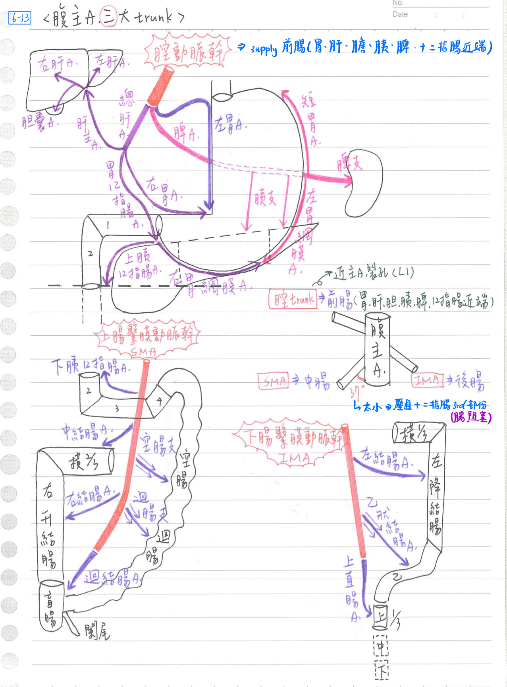
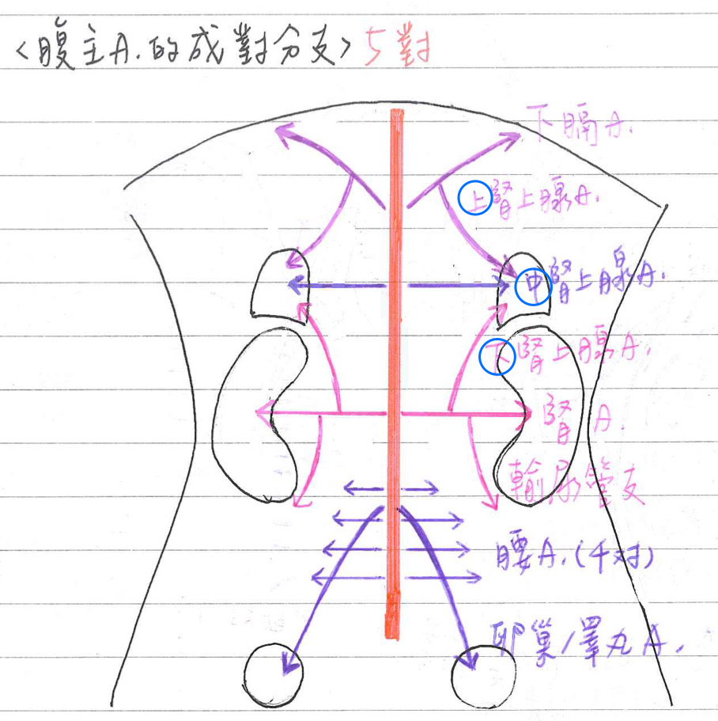
總髂動脈[幾乎每年考，注意分支跟供應]
- 由腹主動脈終端分出，約L4高度(體表定位：髂嵴最上緣supracristal plane、肚臍)
備註
肥胖的人看肚臍不精準，Moore說不是好的定位點
- [重點]外髂動脈(external iliac)：
- 下腹壁A(inf. epigstric a)：海氏三角(鼠蹊三角)的外界
- 外骼A通過鼠蹊韌帶後，延伸為股動脈(femoral a.)
- [重點]内髂動脈(internal iliac)：supply骨盆腔器官、臀肌等，分為前、後支
- 前枝(anterior division)：6分支
- 臍動脈(umbilical a)：遠端退化成內側臍韌帶，近端分出→
- ★上膀胱動脈(sup. vesicle a)：供應膀胱、輸尿管、輸精管[男]
- 輸精管動脈(ductus deferens)[男]=子宮動脈(uterine a.)[女]：supply輸尿管、輸精管[男]、子宮[女]
- ★結紮子宮A時，易誤紮到輸尿管
- ★閉孔動脈(obturator a)→髖臼枝(acetobular)：供應股骨頭
- ★下膀胱動脈(inf. vesicle a)[男]=★陰道動脈(vaginal a.)[女]：
→★★★[109-2]供應膀胱、輸尿管、輸精管/前列腺(主要)/儲精囊[男]、陰道[女]
- ★中直腸動脈(mid. rectal a.)：與上、下直腸動脈相吻合
→★★★★★供應：直腸(中1/3)、輸尿管、輸精管/前列腺/儲精囊(男)、陰道(女)
- ★內陰動脈(int. pudendal a.)：經大坐骨孔的梨肌下孔出骨盆腔，經小坐骨孔返骨盆腔
※梨肌下孔：梨狀肌-尾骨肌之間備註
以下階層是textbook的分支方式(跟趙神寫的有一點出入)
- ★下直腸A(inf. rectal)：直腸(下1/3)、肛管(下1/3)、肛門括約肌
- 會陰動脈(perineal)：★supply會陰部
- →後陰囊(大陰唇)動脈[post. Scrotal(labial)]：陰囊/大陰唇之後方
- →一條分支行於會陰膜上表面，再分出：
- 背陰莖(陰蒂)動脈[dorsal a. of penis(clitoris)]：陰莖(陰蒂)背側
- 深陰莖陰蒂)動脈[deepa.of penis(clitoris)]：陰莖(陰蒂)深部
- 陰莖(前庭)球動脈[bulb of penis(vestibule)]：陰莖(前庭)球
- ★★下臀動脈(inf. gluteal a)：為前枝之終末枝、最大枝。位於★★S2-S3神經之間，經大坐骨孔(梨肌下孔)出骨盆腔；supply★臀大肌
- 臍動脈(umbilical a)：遠端退化成內側臍韌帶，近端分出→
- ★後枝(posterior division)：3分支(臀部為主)
- 髂腰動脈(iliolumbar)：位於★腰薦神經幹(lumbosacral trunk) & 閉孔N之間
- 外側薦動脈(lat. sacral)
- 上臀動脈(sup.gluteal a)：為後枝之終末枝、最大枝。位於★★L5-S1神經之間，經大坐骨孔(梨肌上孔)出骨盆腔；supply臀小/中肌
- 前枝(anterior division)：6分支
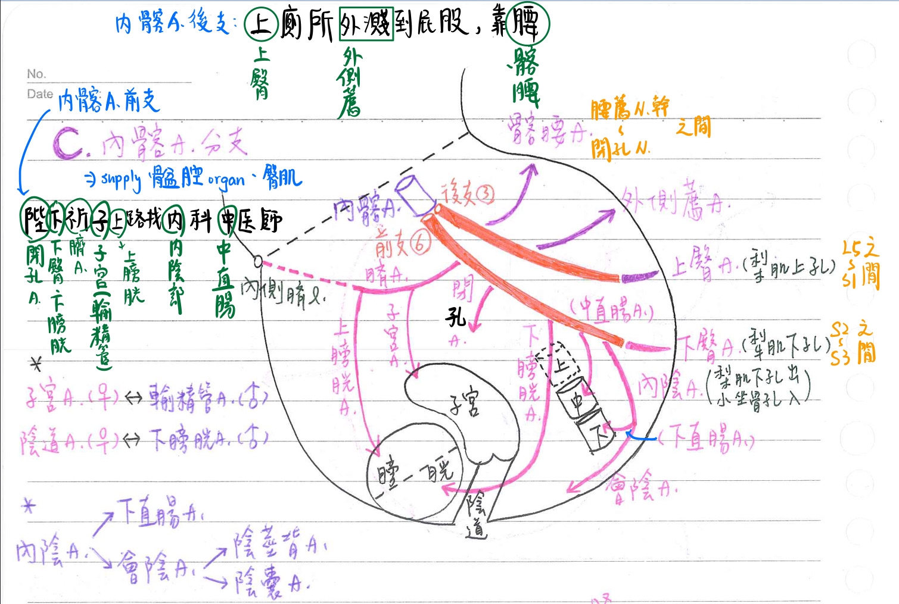
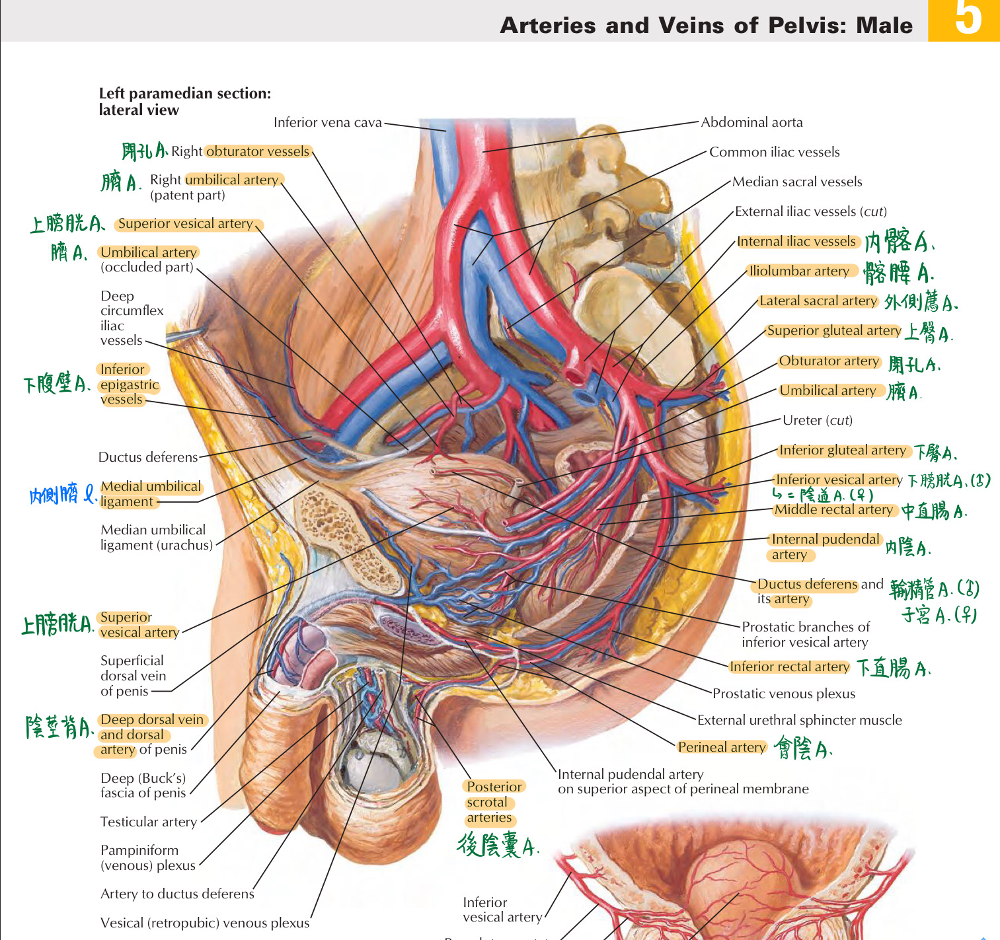
股動脈
- ★轉子吻合(trochanteric anastomosis)：溝通內髂A &股A，供應臀部 & 髖部
- 4條：上臀A、下臀A、內/外側旋股A
- [重點]★★十字吻合(cruciate anastomosis)：溝通內髂A & 股A，供應臀部&髖部
- 4條：下臀A(from 内髂A.)、內/外側旋股A、第1穿通A
- ★膝部吻合(genicular anastomosis)：溝通股A、膝膕A、脛前A；供應膝部
- 股A→降膝A(descending genicular)→上内膝A、上外膝A
- 膝A→下內膝A、下外膝A
- 脛前A→旋腓A、返A(recurent)
- 淺腹壁動脈(superficial epigtric a.)
- 淺外陰A((superficial external pudendal)→淺枝、深枝：供應會陰、陰囊之前方(→前陰囊A)
- ★[108-1]深股動脈(deem femoral a./ profunda femoris a.)：向下行經內收長肌(前)與內收短肌(後上)、內收大肌(後下)之間
- 內側旋股動脈(med. circumflex femoral a.)：穿越★髂腰肌(前)與恥骨肌(後)之間至股骨之內後方
- 外側旋股動脈(lat. circumflex femoral a.)：穿越股直肌(前)與髂腰肌(後)之間至股骨之外前方
- 第1~3穿通動脈(1st~3rd perforating a.)：穿越★內收大肌至股骨之後方
- 淺旋髂動脈(superficial circumflex iliac a.)
- 膕動脈(popliteal a)：股A經內收裂孔(位於內收大肌)之延伸
- 脛前動脈(ant. tibial)l：★★★與深腓N伴行
→足背動脈(dorsalis pedis；★伸拇長肌&伸趾長肌肌腱之間)→- 深蹠動脈(deep plantar)：內側
- 弓形動脈(arcuate)→背側蹠A(dorsal metatarsal)→背側趾A(dorsal digital)
- 脛後動脈(post. tibial)：★與脛N伴行(★[107-2]通過跗溝隧道(tarsal tunnel)
- 腓動脈(peroneal)：★沒有神經伴行
- 內蹠動脈：較外蹠A小
- 外蹠動脈(lateral plantar)→★深蹠動脈弓(deep plantar arch)
→蹠面蹠A(plantar metatarsal)→蹠面趾A(plantar digital)- ★外蹠A位於第5蹠骨底，轉向內側形成深蹠動脈弓，並與深蹠A在第1、2蹠骨底之間相吻合。
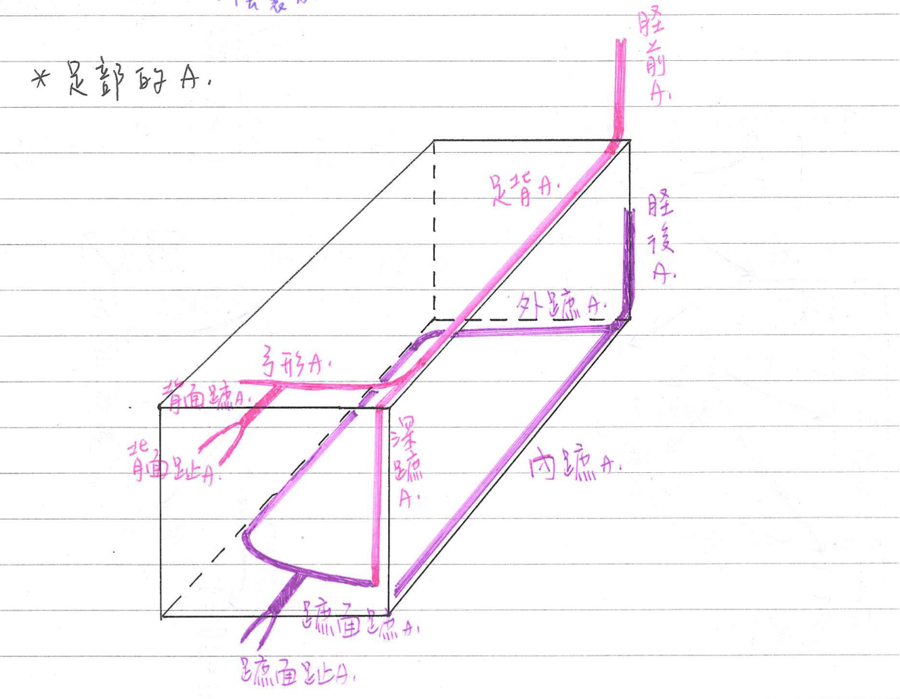
- 脛前動脈(ant. tibial)l：★★★與深腓N伴行
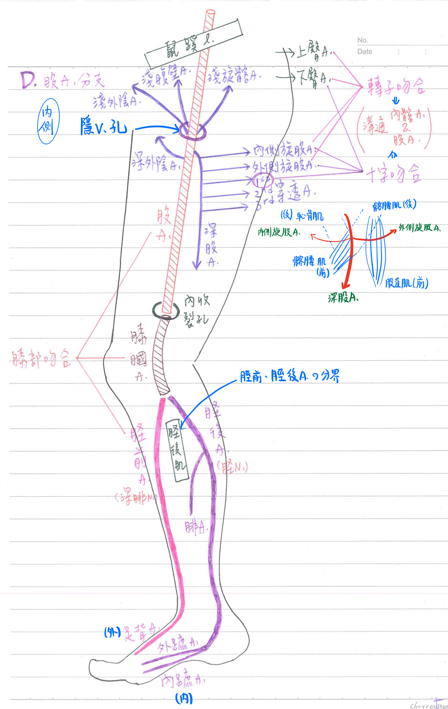
血管重要分界(整理)
- 主動脈弓：位於胸骨角上方(上縱膈腔)，由右前方向左後方延伸
- 升主動脈位於肺動脈幹之右方；肺動脈幹在主動脈弓之下方
- 鎖骨下A & 腋下A之交界：R1
- 腋下A & 肱A之交界：大圓肌
- 外髂A & 股A之交界：鼠蹊韌帶(腹股溝)
- 股A & 膕A之交界：內收裂孔(adductor hiatus)
- 脛前A & 脛後A之分隔：脛後肌
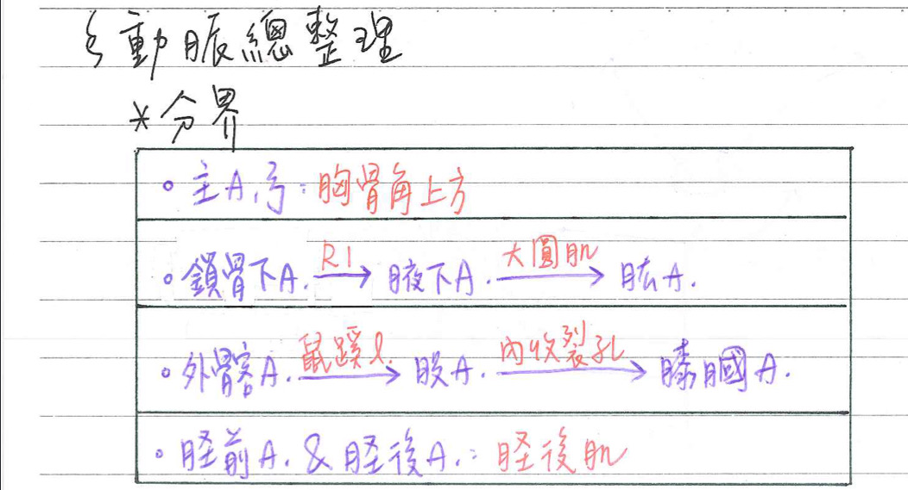
特定部位的血管支配
- 小腦：
- 上小腦A ←基底A
- 前下小腦A ←基底A
- 後下小腦A ←★★椎A
- 齒槽：
- 上-前齒槽動A←眶下A ←上領A
- 上-後齒槽A ←上領A
- 下齒槽A ←上頷A
- 甲狀腺：
- 上甲狀腺A ←外頸A
- 下甲狀腺A ←甲狀腺頸動脈幹(←鎖骨下A)
- ★★胸壁：
- 前肋間動脈(1st~6th) ← 內胸A ←鎖骨下A
- 前肋間動脈(7th~11th) ←肌肉橫膈A (←內胸A ←鎖骨下A)
- 後肋間動脈(1st~2nd)←最高肋間A(←肋頸動脈幹←鎖骨下A)
- 後肋間動脈(3rd~11th) ←胸主A
- 肋下動脈(12h) ←胸主A
- 肩胛區：
- 肩胛上A ←甲狀腺頸動脈幹 ←鎖骨下A
- 肩胛下A ←腋下A (環肩胛A：為肩胛下A之分枝)
- ★橫膈膜：
- 上膈A(←胸主A)
- 下膈A(←腹主A)
- 肌肉橫膈A & 心包膜横膈A (← 內胸A ← 鎖骨下A)
- 胃：
- 胃小彎側：
- 左胃動脈 ←腔動脈幹
- 右胃動脈 ←總肝A
- 胃大彎側：
- 短胃A←脾A(←腔動脈幹)
- 左胃大網膜A←脾A
- 右胃大網膜A←胃十二指腸A←總肝A
- 胃小彎側：
- 腹壁：
- 上腹壁A ←內胸A(←鎖骨下A)
- 下腹壁A ←外髂A
- 淺腹壁A ←股A
- 胰：
- 胰頭：
- 上胰十二指腸A ←胃十二指腸A ←總肝A
- 下胰十二指腸A ←上腸繋膜動脈幹
- 胰體/尾：胰動脈←脾A←腔動脈幹
- 胰頭：
- ★ ★腎上腺：
- 上腎上腺A ← 下隔A(←腹主A)
- 中腎上腺A ←腹主A
- 下腎上腺A ←腎A(←腹主 A)
- 直腸：
- 上直腸A ←下腸繫膜A(IMA)
- 中直腸A ←內髂A
- 下直腸A ←內陰部A(←內髂A)
- 子宮、卵巢：
- 子宮A ←內髂A
- 卵巢A ←腹主A
- 膀胱：
- 上膀胱動脈 ←臍A ←內髂A
- 下膀胱動脈(=陰道動脈) ←內髂A
- 陰部：
- 內陰部A ← 內髂A
- 外陰部A(又分為淺、深外陰A) ←股A
脈搏觸診點
- 頭頸部：
- 總頸A：胸鎖乳突肌前緣中點(收縮壓>60mmHg)
- 顏面A：下頷骨下緣轉折處
- 淺顯A：耳前
- 下肢：
- 股A：鼠蹊韌帶中點，下二指幅(收縮壓>70mmg)
- 膕A：膝膕窩
- 脛後A(內踝)：內踝後方之★★[109-1]跗溝隧道(tarsal tunnel)
- 足背A：足背(★伸趾長肌&伸拇短肌-伸拇長肌之間)
- 上肢：
- 腋A：腋窩
- 肱A：
- 肱二頭肌、肱三頭肌之間
- 肘窩
- 橈A：
- 橈側屈腕肌之外側(收縮壓80mmg)
- ★★解剖鼻煙盒(anatomic snuffbox)
- 尺A：尺側屈腕肌之外側
動脈穿刺處
- 股A：冠狀動脈狹窄一般優先選擇由★[107-1]股動脈進入施行經皮氣球擴張術(percutaneous transluminal coronary balloon angioplasty)
- 橈A
📖 書本補充：與筆記不同或筆記沒寫到的地方
⚠️
以下為對照書本後整理，筆記原文未更動。標「筆記 vs 書」的是兩邊寫法不同、建議回頭確認的地方。冠狀動脈放在「心血管系統-心臟」那頁。
外頸動脈（p.551–552）
- 記憶法：外頸A往內側、後方、前方分別發出 1、2、3 條分支：
- 內側：咽升A——第一或第二條分支，最小。
- 後方：枕A（走在二腹肌後腹深層，舌下N由其後方繞到前面）、耳後A（供應腮腺及耳朵）。
- 前方：甲狀腺上A（發出喉上A）、舌A（走在舌骨舌肌深層）、顏面A（可能和舌A共幹；發出腭升A和扁桃體支）。
- 外頸A發出上頷A及橫顏面A後，延續為顳淺A（109-2-21 解析）。
- 頸動脈體在內、外頸A的分叉處（化學受器）；頸動脈竇在內頸與總頸A交界處（壓力受器）；兩者都經頸動脈竇神經回到舌咽N。
- 腭扁桃體除了主要來自顏面A，也接收腭升、舌、腭降及咽升A的血液（與筆記「1 主要 + 4 次要」一致）。甲狀腺上A在頸部發出後往下走，不供應扁桃體（110-2-3）。
上頷動脈（p.526）
- 三段的位置，書上寫：第一段在下頷頸的內側；第二段在翼外肌的淺層或深層；第三段在翼腭窩（筆記寫「顳下窩」「外翼肌中」，指同一段落）。
- 第一段分支走向：腦膜中A穿棘孔進顱腔；下齒槽A穿下頷孔進下頷骨；深耳A到外耳道；鼓室前A到鼓膜深層表面。
- 第二段除頰A（供應臉頰的皮膚、肌肉及口腔黏膜），還有到咀嚼肌的肌肉支（顳肌、翼外、翼內肌及嚼肌）。
- 第三段：眶下A分出上齒槽前、中A；上齒槽後A到後排牙齒（臼齒和前臼齒）及上頷竇；腭降A分成腭大、小A；蝶腭A穿過蝶腭孔進鼻腔。
- 書的提示：同樣分三段的動脈有上頷A（以翼外肌分）、鎖骨下A（以前斜角肌分）、腋A（以胸小肌分）；腋A三段各有 1、2、3 條分支。
硬腦膜與鼻腔的動脈（p.419、544）
- 腦膜中A（來自上頷A）由棘孔入顱，前支走到翼點（pterion）再到頭頂、後支往上後方；腦膜副A由卵圓孔入顱；其他腦膜支來自眼、枕及椎A。書的提示：特別記腦膜中A的來源及走法。
- 鼻腔五條A：篩前、篩後（眼A）、蝶腭、腭大（上頷A）、上唇A的鼻中隔支（顏面A），在鼻中隔前端吻合成Kiesselbach 氏區，最易流鼻血。
腦的動脈（p.423–426）
- 前循環（內頸A）：大腦前、大腦中、前交通、後交通、脈絡叢前A；後循環（椎A）：大腦後、小腦上、AICA、PICA、基底、脊髓前、脊髓後（脊髓後A來自椎A或 PICA）。
- Claude 註：書上這張表用紅字標「共同形成威利氏環」的血管時，把「脈絡叢前動脈」也標成紅字；但同書圖 103 的威利氏環虛線並不包含它，一般教科書也不把脈絡叢前A算進環內。筆記的「七條血管」寫法是對的。
- 書的提示：
- 動眼N夾在大腦後A和小腦上A之間；外旋N在 AICA 前方。
- 脈絡叢前A供應：側腦室下角的脈絡叢、內囊後肢、丘腦和海馬回的一部分。
- 內囊上半部由大腦中A供應；下半部前肢由大腦前A、後肢由脈絡叢前A供應。
- 記憶法：椎A由下往上走，先碰到小腦下面，所以先發 PICA、再發 AICA。
- 書的腦葉供應表：大腦外側面幾乎都是大腦中A（額、頂、顳、枕葉外側、顳極、腦島）；額葉內側及下方、頂葉內側、扣帶回、胼胝體＝大腦前A；顳葉內側及下方、枕葉內側及下方、海馬旁回＝大腦後A。
- 筆記 vs 書：筆記寫大腦前A供應「顳葉內側（嗅覺）」；書上顳葉內側及下方屬大腦後A，大腦前A負責的是額葉、頂葉內側及扣帶回、胼胝體。
- 大腦前A供應額、頂葉內側，即前、後中央旁小葉（下肢運動及感覺），所以左大腦中A阻塞不會造成右下肢症狀，而是失語症（103-1-1）。
- 迷路動脈（供應內耳膜迷路）來自基底A（112-1-6）；上段頸部脊髓的血來自左右椎A分支合成的脊髓前A（105-2-3）。
鎖骨下動脈（p.553–554）
- 椎A鑽入 C6 的橫突孔；胸內A在頸部無分支。
- 甲狀腺下A的終端支為頸升A，到椎前肌群；頸橫A分淺層及深層支；肩胛上A走在肩胛橫韌帶上方。
- 肩胛背A（第三段）可能來自頸橫A的深層支；提肩胛肌和菱形肌的血可來自兩者之一。肩胛骨內緣與棘突之間的外傷 → 傷到頸橫A的分支（106-2-31）。
胸壁與後縱隔（p.145–151、191–193）
- 書的肋間動脈表：前 1–6 ＝胸內A；前 7–9 ＝肌膈A；後 1–2 ＝肋間最上A（肋頸幹）；後 3–11 ＝主動脈。
- 筆記 vs 書：筆記寫肌膈A → 「7～11th 前肋間A」；書上是7–9，因為第 11、12 肋骨沒有延伸到前面，胸壁前面沒有第 10 和 11 肋間。
- Claude 註：p.149 的表在「後 1–2 肋間」另列了「胸上（superior thoracic，來自腋A）」；但同書 p.356 寫胸上A供應的是第 1、2 肋間的前部及前鋸肌，後肋間 1–2 以肋間最上A為準。
- 書的提示：肋間動脈的考法是問「源自哪一條動脈」，不是問分布到哪一個肋間。
- 內胸A走在胸骨兩側（肋軟骨與胸骨交接處），在胸橫肌前面、肋軟骨後面；胸骨旁第五肋間深 1 公分的刺傷最可能傷到它（101-1-13）。
- 進入脊髓成為脊髓節動脈的是後肋間A的分支（110-2-11）。
- 乳房動脈：內側＝胸內A；中間＝胸肩峰A的胸支；外側＝胸外側A及肋間後A。記憶法：乳房的血來自名稱中有「胸」（thoracic / pectoral）的血管。肋下A在第 12 肋骨下方，不供應乳腺（108-1-22）。
- 胸主A分支（書）：食道、支氣管、後肋間、膈上、心包、縱隔支；氣管、食道及縱隔的動脈都來自胸主A。左支氣管A由胸主A發出（103-2-12）。內胸A是鎖骨下A的分支，不是主動脈的直接分支（107-2-23）。
腹部（p.201、210–213、223–224、240–241、263）
- 前腹壁：腹壁上A（胸內A）與腹壁下A（髂外A）在腹直肌後面吻合；旋髂深A（髂外A）走向與腹股溝韌帶平行；腹壁淺A、旋髂淺A（股A）走到皮下；肋間及肋下A供應腹壁外側。
- 書的消化道動脈表：
- 前腸（腹腔幹）：肝與膽囊、胃（胃短、胃後、左右胃、胃網膜A）、脾、胰、十二指腸上段。
- 中腸（腸繫膜上A）：十二指腸下段、空迴腸、盲腸與闌尾（迴結腸A）、升結腸（右結腸及迴結腸A）、橫結腸前半（中結腸A）。
- 後腸（腸繫膜下A）：橫結腸後半（左結腸A）、降結腸、乙狀結腸、直腸上段。
- 筆記 vs 書：中、後腸交界，筆記寫「橫結腸前 2/3／後 1/3」；書上寫橫結腸的一半（或橫結腸和降結腸交界處）。前、中腸的交界則是十二指腸第二部分的一半。
- 書註：脾臟並非來自前腸，而是源自間葉（mesenchyme），只是血液由腹腔幹供應。胰臟和十二指腸都同時接受腹腔幹（胰十二指腸上A）與腸繫膜上A（胰十二指腸下A）的血液。
- 直腸三條A：直腸上（腸繫膜下A）、直腸中（髂內A）、直腸下（陰部內A）。
- 起點高度：睪丸A在腸繫膜上A下方（介於腸繫膜上、下A之間）發出，四個選項中最低；腎上腺中A與腹腔幹差不多高；腎A與腸繫膜上A差不多高（110-2-6）。
- 胃的動脈（p.240）：多了胃後A（脾A）→ 胃底部和後部；左胃A供應食道及胃小彎。
- 筆記 vs 書：右胃A的來源，筆記寫總肝A；書的表寫肝動脈（本體），解析說主要來自肝動脈本體（或總肝A），變異很多；102-2-20 的答案選「肝總動脈」。
- 大網膜的動脈來自左右胃網膜A，兩者都源自腹腔幹（102-2-17）。脾A結紮後，左胃A直接由腹腔幹發出，不受影響（107-1-26）。
- 腎上腺：上＝膈下A、中＝腹主A、下＝腎A（與筆記一致）。
- 睪丸A來自腹主A；陰囊前支＝陰部外A（股A），陰囊後支＝陰部內A的會陰A。記憶法：用額切面把陰囊分前後，後半靠會陰 → 陰部內A；前半靠大腿 → 股A的分支（105-1-19：陰莖球A不供應陰囊）。
髂內動脈與骨盆（p.283–286、299–300、322–323）
- 書的髂內動脈表（前部）：臍A（封閉部分＝臍內側韌帶；未封閉部分發出膀胱上A）、膀胱下A（男）／陰道A（女）、閉孔A、直腸中A、子宮A、陰部內A、臀下A；後部：臀上A、髂腰A、薦外側A。
- 筆記 vs 書：輸精管A的來源。筆記把「輸精管A（男）＝子宮A（女）」列在臍A近端的分支；書上寫輸精管A和前列腺A是膀胱下A發出（有時來自膀胱上A），子宮A是髂內A前部的獨立分支，跨過輸尿管。
- 閉孔A通常自臍A的起源處發出；直腸中A起源處多變，支配直腸下部，有時與膀胱下A或陰部內A源自同一主幹（所以考題常說直腸中A阻塞會影響前列腺、陰道、儲精囊，見 101-2-18、102-2-22）。
- 筆記 vs 書：臀上A的位置。筆記寫「L5–S1 神經之間」；書寫腰薦神經幹和 S1 神經根之間（有時穿過 S1 和 S2 之間）。臀下A通常穿過 S2、S3 之間（一致）。
- 髂腰A：髂支供應髂肌和髂骨；腰支供應腰大肌和腰方肌。薦外側A供應薦神經根外面的脊髓膜和豎脊肌。
- 書的提示：最常見的考法是「某動脈阻塞後會影響哪個器官」；女性沒有膀胱下A，由陰道A取代。
- 女性生殖器：陰道上部＝子宮A；中下部＝陰道A和陰部內A；子宮＝子宮及卵巢A；卵巢和輸卵管＝子宮A（上行支）和卵巢A。女性內生殖器都有子宮與卵巢A的雙重血液供應，所以結紮子宮A後仍可由卵巢A出血（106-1-24）。
- 陰部內A：在肛門三角發出直腸下A；在泌尿生殖三角的淺囊發出會陰A，深囊發出陰莖（陰蒂）背A。直腸下A只走在會陰部，不進骨盆腔（111-2-23）。
上肢（p.356–363）
- 腋A：第一段＝第 1 肋骨外緣到胸小肌上緣，胸上A供應第 1、2 肋間前部及前鋸肌；第二段＝胸小肌後方，胸肩峰A（肩峰、鎖骨、三角肌、胸支）、胸外側A（乳房外側部）；第三段＝胸小肌下緣到大圓肌下緣，旋肱前後A（肱骨頸周圍及肩關節）、肩胛下A（發出旋肩胛A和胸背A，分別到肩胛區及闊背肌）。
- 肱A：深肱A的終端支為中間及橈側副A；上、下尺側副A與前、後旋尺A吻合；尺A發出前、後旋尺A及骨間總A（骨間前、後A和旋骨間A），在手部主要形成掌淺弓；橈A的旋橈A與橈側副A吻合，形成手肘區的吻合網。
- 解剖鼻煙壺由伸拇長、短肌及外展拇長肌圍成，裡面除橈A外還有舟狀骨和大多角骨。
- 後肩胛區三個空間：方形空間＝腋N + 旋肱後A；三角空間＝旋肩胛A；三角間隙（上：大圓肌、外：肱骨、內：肱三頭肌長頭）＝橈N + 肱深A。肱骨三角肌粗隆骨折 → 傷到橈N與肱深A（102-1-26、107-1-30）。
臀部與下肢（p.379–403）
- 筆記 vs 書：臀大肌的血液，筆記寫下臀A；書的表標示臀大肌由臀上A和臀下A共同供應，但神經只來自臀下N。臀上A另供應臀中、臀小、闊筋膜張肌；臀下A另供應閉孔內肌、上下孖肌、股方肌。書的提示：臀下A有一分支供應坐骨神經。
- 股A：發出腹壁淺、旋髂淺、陰部外及股深A；穿過內收裂孔後為膕A。
- 筆記 vs 書：穿通動脈數目。筆記寫「第 1～3 穿通A」；書寫股深A發出四條穿通動脈，穿過內收大肌。
- 旋股內、外側A來自股深A，供應大部分股骨頭和頸的血液（特別是旋股內側A）；和臀下A（有時）及股深A的第一條穿通支形成十字吻合。臀上A不參與十字吻合（110-1-12）。
- 書的提示：股A的分支不用刻意背；臀部安全注射區為外上象限（不會有坐骨N通過）。
- 小腿：脛前A（膕A分出）終止為足背A，腓深N位於足背A外側，供應小腿前面和足背；脛後A發出腓A，終止為足底內、外側A；腓A是脛後A的最大分支，供應小腿後外側；足背A發出足底深A到足底。
- 小腿血管神經伴行表：脛前A–腓深N；小隱V–腓腸N；脛後A–脛N（走在比目魚肌深層）；大隱V–隱N；腓淺N沒有血管伴行（105-1-23），腓A沒有神經伴行（101-2-19）。
- 足底外側A和足底深A形成蹠弓；足底內側A分淺、深支到腳趾。
- 股三角：上＝腹股溝韌帶、內＝內收長肌、外＝縫匠肌，頂部＝闊筋膜（有隱靜脈開口），底部＝髂肌、恥骨肌；由外而內為股N、股鞘（股A、股V、股管）。股管內有脂肪和深腹股溝淋巴結，是股疝氣發生處。股N在股三角內但不在股鞘內，也不進內收管。
- 內收管：縫匠肌深層的肌肉間通道（前＝縫匠肌、後＝內收長和大肌、下＝內收裂孔），內含股A、股V、隱N。
📝 書中歷屆考題（點選答案作答）
109-2-19p.552
腭扁桃腺 (palatine tonsil) 的血液供應，主要來自下列何者的分支？
110-2-3p.552
下列何者不供應腭扁桃腺 (palatine tonsil) 血液？
💡 上甲狀腺動脈在頸部發出後往下走，不會供應位在口腔後方的腭扁桃腺。
109-2-21p.552
橫顏面動脈 (transverse facial artery) 是下列那一動脈的分支？
💡 外頸動脈發出上頷及橫顏面動脈後，延續形成淺顳動脈。
106-2-31p.554
背部，右肩胛骨內緣與脊椎的棘突 (spinous process of vertebra) 間外傷出血，最可能直接傷及下列何者的分支？
💡 這裡的血管與肩胛背神經伴走，可能是同名的肩胛背動脈，或來自頸橫動脈的深層支。
108-2-19p.554
下列何者不是甲狀頸幹 (thyrocervical trunk) 的分支？
109-2-3p.418
有關內頸動脈 (internal carotid artery) 的敘述，下列何者錯誤？
💡 內頸動脈通過破裂孔後，是往前（不是往後）轉向進入海綿竇。
101-1-20p.427
下列何者阻塞時，最可能造成右側肢體無力及運動型失語症 (Broca's aphasia)？
💡 布洛卡區在左額葉的外下方，由大腦中動脈供應。
103-1-1p.427
左側中大腦動脈 (middle cerebral artery) 阻塞，最可能造成下列何種症狀？
💡 大腦中動脈供應腦葉外側；下肢運動感覺區在內側的前、後中央旁小葉，由大腦前動脈負責。
104-2-1p.427
豆狀核 (lenticular nucleus) 之血流，主要來自下列何者之深部分支 (deep branch)？
💡 豆狀核和內囊的血液大部分來自大腦中動脈。
105-1-1p.427
丘腦之血流主要來自下列何者之深部分支 (deep branch)？
💡 丘腦位在大腦前和中動脈的後方，血液大部分來自大腦後動脈。
105-1-2p.427
Corpus callosum 之血流主要來自下列何者？
109-2-14p.428
胼胝體 (corpus callosum) 的主要血流供給來自下列何動脈？
105-2-3p.428
上段頸部脊髓之血流，主要來自下列何者？
💡 來自左右椎動脈的分支，彼此會合成脊髓前動脈。
108-1-31p.428
下列何者是單一並沒有成對的構造？
💡 脊髓後動脈成對，源自椎動脈或小腦下後動脈。
109-1-1p.428
下列何者供應內囊後支 (posterior limb of internal capsule) 之血流？
109-2-18p.428
大腦初級視覺皮質 (primary visual cortex) 之主要血流來自何處？
💡 初級視覺皮質位在枕葉，血流主要來自大腦後動脈。
110-2-1p.429
下列何者不是內頸動脈的分支？
💡 前交通動脈連接兩側的前大腦動脈，並沒有直接來自內頸動脈。
112-1-6p.429
下列何者供應內耳膜迷路 (membranous labyrinth) 的血液？
💡 迷路動脈來自基底動脈。
101-1-13p.151
胸骨旁，第五肋間深約 1 公分的穿刺傷，造成大量出血，最可能受傷的動脈是：
109-2-24p.151
內胸動脈 (internal thoracic artery) 走在：
💡 內胸動脈走在胸骨兩側（肋軟骨和胸骨相接處），且在胸橫肌的前面。
106-2-22p.151
下列何者不發出肋間動脈？
110-2-11p.151
在胸腔，下列何者的分支進入脊髓成為脊髓節動脈 (segmental medullary artery)？
💡 椎動脈往頸部走，不會在胸腔有分支；胸內動脈和肋間前動脈走到前胸壁，不會到後方的脊髓。
108-1-22p.146
下列何者不負責乳腺之血液供應？
💡 肋下動脈在第 12 肋骨下方，不會有分支往上供應乳腺。
103-2-12p.192
一般情況下，左支氣管動脈 (left bronchial artery) 由下列何者發出？
113-1-16p.193
有關支氣管動脈 (bronchial artery) 敘述，下列何者錯誤？
💡 支氣管動脈是由胸主動脈發出。
107-2-23p.193
下列何者不是主動脈的直接分支？
💡 內胸動脈是鎖骨下動脈的分支。
110-2-6p.224
下列何動脈的起點水平位置最低？
💡 腎上腺中動脈和腹腔動脈幹差不多高；腎動脈和腸繫膜上動脈差不多高；睪丸動脈在腸繫膜上、下動脈之間發出，最低。
110-2-7p.224
直腸上段的動脈血來自：
102-2-17p.241
大網膜 (greater omentum) 的動脈血流來自下列何者？
💡 大網膜的血來自左、右胃網膜動脈，分別是脾動脈和胃十二指腸動脈的分支，都源自腹腔動脈幹。
102-2-20p.241
右胃動脈 (right gastric artery) 由下列何者發出？
💡 右胃動脈主要來自肝動脈本體（或稱肝動脈），但變異很多。
107-1-26p.241
脾臟破裂進行緊急手術，於脾動脈 (splenic artery) 發源處結紮該動脈以利止血，術後，下列何者的血流不受影響？
💡 左胃動脈直接由腹腔動脈幹發出。
105-1-19p.211
下列何者之分支不供應陰囊 (scrotum)？
💡 提睪肌動脈供應陰囊內的提睪肌；股動脈經陰部外動脈供應前半部；髂內動脈經陰部內動脈供應後半部。
103-2-17p.213
有關睪丸的血流，下列何者正確？
103-1-15p.264
下列有關腎上腺 (adrenal gland) 的動脈供應，何者正確？
101-2-13p.284
下列何者不是髂內動脈 (internal iliac artery) 的分支？
💡 直腸上動脈是腸繫膜下動脈的分支。
111-2-24p.284
下列何者不是髂內動脈 (internal iliac artery) 的分支？
💡 深髂迴旋動脈是髂外動脈的分支。
112-1-24p.285
下列何者最不可能是髂內動脈 (internal iliac artery) 的分支？
💡 薦正中動脈是由腹主動脈下方（快接近分支成總髂動脈處）分出來的一條單獨動脈。
103-2-19p.285
阻斷髂內動脈 (internal iliac artery) 之血流時，最不會直接影響下列何者之血液供給？
💡 直腸上部由腸繫膜下動脈的直腸上動脈供應。
101-2-18p.285
直腸中動脈發生阻塞，下列何者最不受影響？
💡 到陰道、儲精囊和前列腺的動脈有時會和直腸中及陰部內動脈源自同一條主幹，阻塞時容易受影響；只有膀胱是獨立發出，不受影響。
105-1-17p.285
下列何者供應膀胱血液？
💡 到膀胱的膀胱下動脈有時會和直腸中動脈源自同一條主幹；女性則由陰道動脈取代膀胱下動脈。
104-1-17p.285
前列腺動脈 (prostatic artery) 主要源自下列何處？
102-2-22p.285
下列何者發生阻塞，最不影響前列腺的血液供應？
💡 到前列腺的動脈是膀胱下動脈；直腸中和陰部內動脈有時與膀胱下動脈源自同一主幹，阻塞時也可能影響。
101-2-15p.286
下列何者發生阻塞，最不影響輸精管的血液供應？
💡 睪丸動脈會和輸精管的血管形成吻合；膀胱下及直腸中動脈的理由同上，只有陰部內動脈無關。
109-2-7p.286
膀胱下動脈 (inferior vesical artery) 發生阻塞，下列何者最不可能受影響？
💡 直腸的血液來自直腸上、中、下動脈，並無來自膀胱下動脈。
108-2-7p.286
下列何者由梨狀肌 (piriformis) 的上方進入臀部？
💡 這題在 p.286 與 p.380 都有出現。
112-2-24p.286
下列何者不供應輸尿管 (ureter) 的血液？
💡 輸尿管由腎盂延伸下來，沿途有許多鄰近動脈供應，但閉孔動脈不是。
113-1-23p.286
關於陰部內動脈 (internal pudendal artery)，下列敘述何者最不恰當？
💡 直腸中動脈直接源自髂內動脈的前部。
102-1-20p.299
在進行子宮切除 (hysterectomy) 結紮子宮動脈時，下列何者最可能會被誤紮？
104-2-17p.300
下列何者發生阻塞時，最不會影響陰道的血液供應？
💡 陰道的動脈來自陰道及子宮動脈，沒有來自卵巢動脈。
106-1-24p.300
子宮摘除手術結紮子宮動脈 (uterine artery) 後，仍有出血現象，此血液最可能來自下列何者的分支？
💡 只有卵巢動脈有分支走到輸卵管，跟子宮動脈的上行支形成吻合。
111-2-23p.323
下列何者不進入骨盆腔？
💡 下直腸動脈是陰部內動脈的分支，只會走在會陰部。
101-1-15p.359
30 歲男性工人，工作時被玻璃割傷，前臂腹面，離腕關節 3 公分的小指側有一 2 公分的傷口，檢查時，有血液湧出，請問最可能是下列何構造受損？
💡 在腕關節附近、靠近小指側的動脈為尺動脈，而非指動脈。
101-2-26p.360
下列關於肱動脈的敘述，何者錯誤？
💡 深肱動脈是和橈神經伴行。
106-1-9p.360
手部鼻咽區 (snuff box) 觸摸到的脈搏是下列何者的脈動？
102-1-26p.363
肱骨在三角肌粗隆 (deltoid tuberosity of humerus) 位置的骨折，最可能直接傷及那一條血管？
💡 三角肌粗隆附近有橈神經和肱深動脈走在橈神經溝。
107-1-30p.363
橈神經 (radial nerve) 在大圓肌 (teres major) 下方處受到傷害，通常也會傷及與其伴行的那一條血管？
💡 在大圓肌下方，橈神經與深肱動脈一起走在橈神經溝。
103-2-23p.380
下列何者通過坐骨大孔 (greater sciatic foramen) 且供應臀大肌 (gluteus maximus) 的血液？
107-1-29p.390
下列選項中，心臟科醫師會優先選擇，由何處進入施行心臟冠狀動脈的氣球擴張術 (percutaneous transluminal coronary angioplasty)？
💡 管子由股動脈進入後，依序經髂外、髂總動脈進入腹主動脈，再一路向上到主動脈弓及升主動脈，之後進入冠狀動脈。
108-1-29p.390
下肢的內側迴旋股動脈 (medial circumflex femoral artery) 與外側迴旋股動脈 (lateral femoral circumflex artery) 是下列何者的直接分支？
110-1-12p.390
股動脈 (femoral artery) 穿過下列何者後進入膕窩 (popliteal fossa) 成為膕動脈 (popliteal artery)？
💡 股動脈穿過內收大肌所形成的內收裂孔後，形成膕動脈。
110-1-12p.390
為進行髖關節手術，結紮了大腿上部所有形成十字吻合 (cruciate anastomosis) 的動脈，下列何者最不受影響？
💡 上臀動脈並未形成十字吻合。（書上這題與上一題印的考題編號都是 110-1-12。）
102-2-28p.398
下列何者伴行脛前動脈 (anterior tibial artery) 且負責支配脛前肌 (tibialis anterior)？
104-1-28p.398
下列何者伴行脛後動脈 (posterior tibial artery) 且支配脛後肌 (tibialis posterior)？
101-2-19p.398
下列何者在小腿沒有神經伴行？
105-1-23p.398
下列何者在小腿沒有血管伴行？
101-2-21p.403
內收肌裂孔 (adductor hiatus) 為位於下列何者的構造？